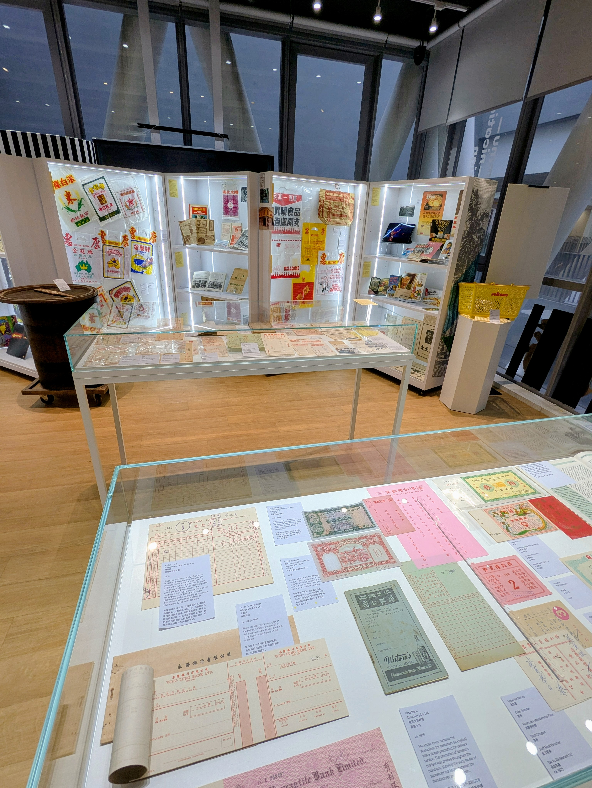
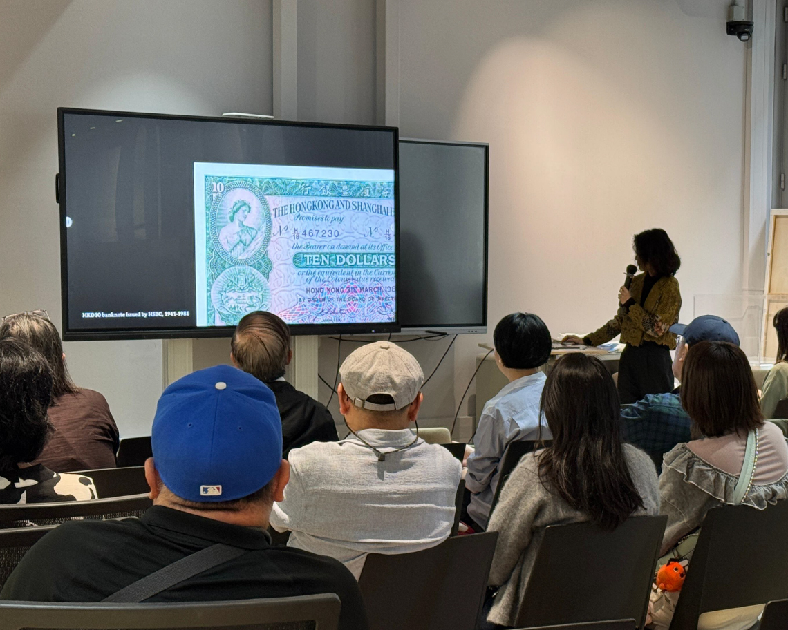
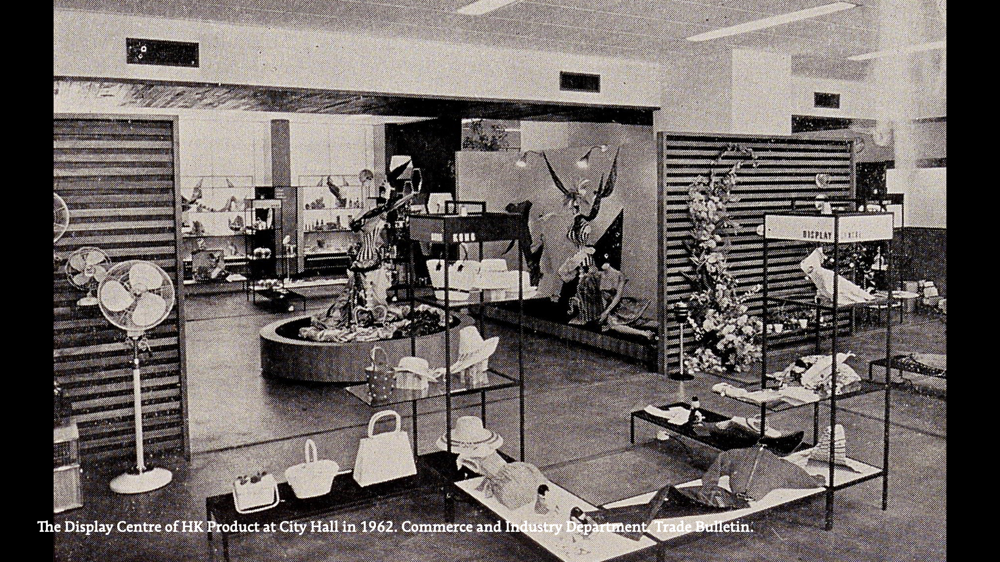
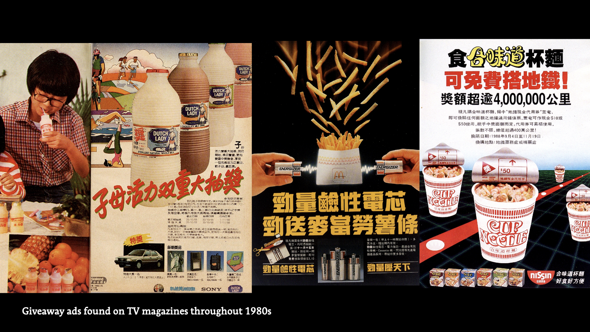
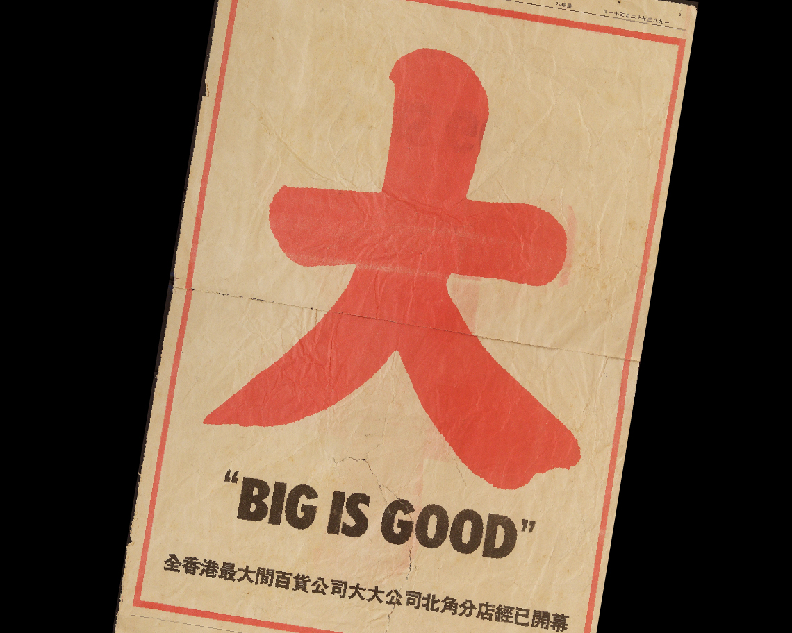
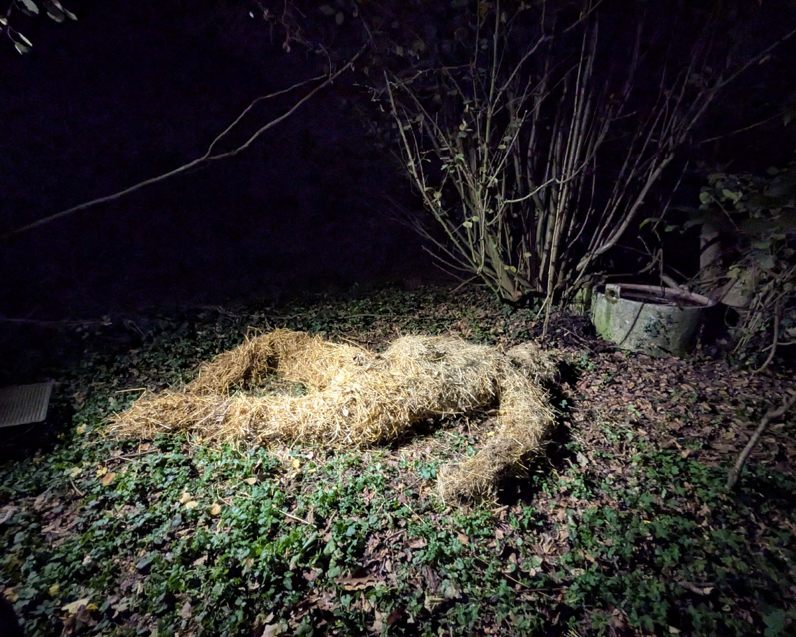
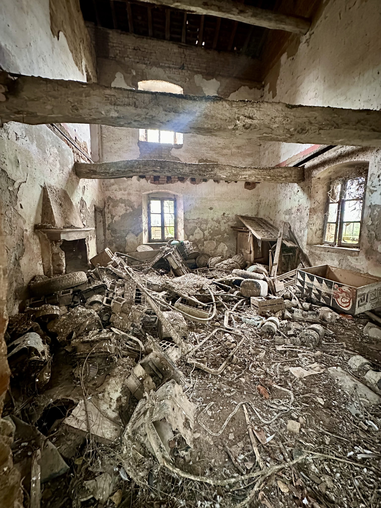
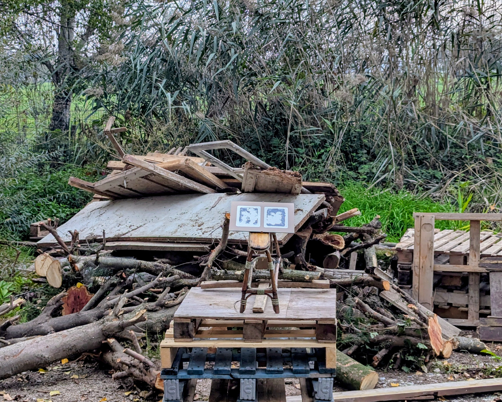
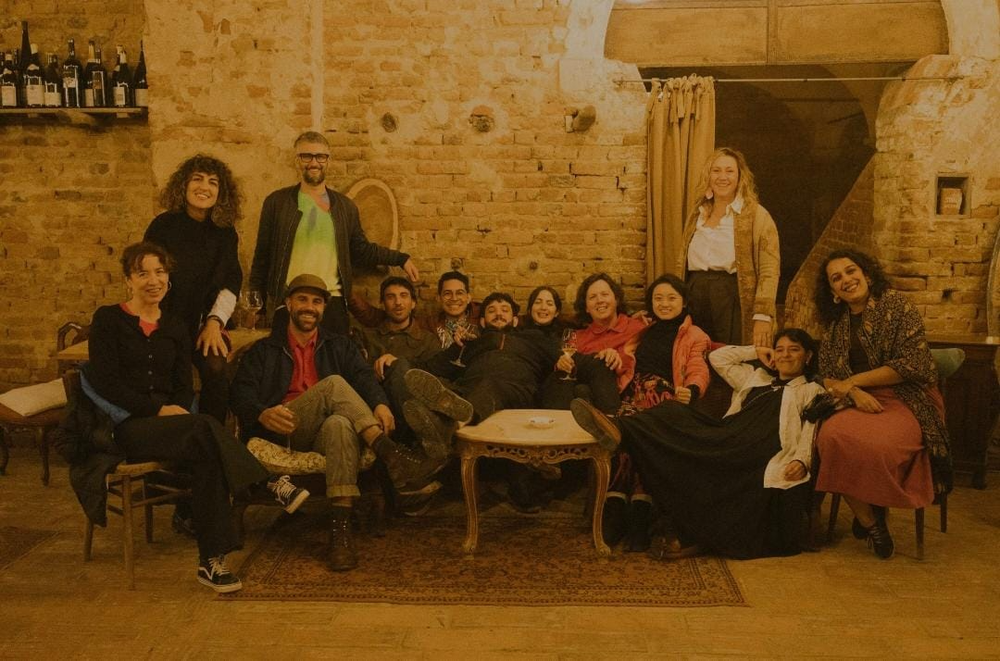

- 
- 
-

- 
- 
- 
2024 — 2025
Designing Well-beings: Everyday Consumption
It is my absolute honour to be awarded the inaugural Design Trust Graphic Archive Research Fellowship in partnership with the Hong Kong Design Institute (HKDI)!
This opportunity has allowed me to combine my experience in design with my research interests in food and systems comprehensive research project. The findings will be presented in a forthcoming publication, also culminating in an exhibition planned for 2028.
(...)
Consumption is an integral part of urban life, and over the decades the shifting consumer needs paralleled Hong Kong’s rapid economic and societal transformation.
My research explores such graphic design has shaped perceptions of trust and authenticity in the context of buying and selling in Hong Kong from the 1940s to the 1980s. Check out my highlight in Design Trust for further details.
- 
-

-

- 
- 
- 
2025
Residenza Lago Scuro
Being part of the cohort of Residenza Lago Scuro has unexpectedly become my personal highlight of 2025. Spending two weeks in Cascina Lago Scuro has given me the privilege to reflect and reshuffle my creative approach as a response to the external.
I’ve idled, wandered, observed. To conclude the journey I’ve curated a route with three site-specific installations for the open-house showcase, spotting those liminal spaces between human and nonhuman.
I’ve also loved every morning pastries (the butter!), exquisite meals prepared by the chefs and everyone, and all the late night chats and games. Such a dream to know all these practices and experiences from these creatives all around the world. I really missed the messiness and vibrancy!


2020 — ongoing
Tai Merry All the Way 餐餐大快樂
An ongoing research/ investigation on local fast food chains of Hong Kong. A series of tangible exploring the concepts of food standardization, market strategies, franchising and global logistics, how it affects local's perception of taste profile and how we hack this fast food ecosystem.
(...)
The Cost-Performance Difference Indicator is designed to assist your calculation of cost-performance ratio of the dishes you selected, as to determine if your selection is cost-effective. By creating the customised ratio regarding your selection — the smaller the difference, the better value of your meal.
How Far did I Travel to Get Onto your Plate is a wheel of knowledge giving a glimpse on the food behind the fast food scene — what they exactly are, where they’re from and how far they have travelled onto our plate.
I have also created a map showcasing the geographic (force) distribution of three local major fast food chains and their franchises in 2019. Check out my instagram to follow how it goes too!

2020 — ongoing
Tai Merry All the Way 餐餐大快樂
You are what you eat and you’re eating Maxim’s. I have made a little montage with local fast food commercials with a statment below as the prelude of my investigation.
(...)
1967 indicates the watershed of Hong Kong history. The ideology of localism grasped between the gap of east and the west, followed by the series of social reforms by MacLehose in the 1970s have promoted Hong Kong to be the Four Asian Dragons in a short period of time. The shift in communications technology with broadcast television expanded notions of collective identity — the confusion of resisting British colony and seeking locality was then replaced by capitalism and consumerism. Café de Coral established its first restaurant in Sugar Street, Causeway Bay in 1968, Maxim’s and Fairwood joined the competition in 1972 — Café de Coral already has four branches when McDonald’s begin serving its burger on Paterson Street in 1975. Hong Kong-style fast food has blossomed among the perspective of local standard as an emerging industry.
The evolution of local fast food and their business strategies are the two-line narrative of Hong Konger’s roots and history — Rootless as the mixed culinary elements from all over the world, neither purely from the east nor the west; Resilience as the opportunism by keeping abreast of trends with limited resources. Truly speciality of Hong Kong, wandering between market competition and local sentiment and nostalgia, Hong Kong-style fast food is a delicate balance between standardized supply and demand and ever changing tastes.
What are we exactly eating despite all these complex social, cultural, historical and capital context? Ways of consumptions are politicized today, meal strike is regarded as a means of resistance — Maxim’s bearing all the burnt — Eating, consumption and resistance are mutually constitutive, they produce each other and deserves urgent reflections.
Deconstructing three major local fast-food chains of Hong Kong, Tai Merry All The Way delve into its ecosystem with their taste profile, space-time distribution as well as the supply-demand mechanisms. While we analyze how local fast foods construct our taste profile, we look into Hong Kongers’ strategies of survival.


2022
Maní: Liderando los cultivos sagrados de Hong Kong
馬列:引領香港的神聖作物
As one of the participants of Somewhere Called O’higgins, a 3-month residency to explore the native gastronomic landscape of the region of O'Higgins, Chile, I had a valuable time to study Maní (peanuts) by getting in touch with local producers and farmers.
By comparing their agricultural heritage along with ours, I have reimagined and regloried Maní as the crop from Chilean gods - just as Manna - therefore I have created a temple documenting our worship in Casa De La Cultura Rancagua as a prelude to the Gastronomic Festival of O'Higgins. Wish this Chilean wisdom could lead us to a brighter future, just as Exodus of us Hong Kongers.


2022
FDzeeN Hong Kong launch
Being one of the contributors of the first issue of FDzeeN, it was my absolute pleasure to host its Hong Kong launch with my wonderful workmates as the opening event of the Pointsman art space.
For this occasion I have curated an immersive (Junk) Food Safari around Sai Ying Pun — based on the chapter Palate of Junk (see next project); also a (not-so-junk) food lantern-riddle night with serious fun as it happened on Mid-Autumn Festival. A very special experience for me to put everything together emerging different aspects of myself.


2021 — ongoing
Palate of Junk
As a first step to reflect our mindless consumption of those spicy, heavy seasoned junk snacks originated in mainland China. These brightly coloured, heavily seasoned and processed snacks are numbing our palates — and there’re things we could do about it.
I presented this observation and suggested some homemade recipes of these snacks as the first phase of this project, which is featured in the very first issue of FDzeeN .


2020 — 2024
Dawn Soil
Expanding the spectrum of edibles by evolving our digestive system with Dawn Soil TM. Also a long statment below.
(...)
There are over thousand types of digestive enzymes inside us. Imagining these hard workers living inside your tongue, stomach and intestines, eating what you’re eating and excrete nutrients you need to maintain your mechanism. You are a manufacturing industry of several organic compounds.
What we’re able to digest defines the spectrum of what’s edible to us - and we have been expanding the spectrum of edibles over the centuries along human civilization: we use tools, heat, fermentation, air, chemicals and additives to change the properties of foods to make them more digestible (also assessable and enjoyable), altering the significances of eating from functional purpose to sensational experience. Yet no matter how much coatings and additional values we have created, it always leads to the same destination - nutrients inputs and excretion.
Our eating habits is a never-ending evolution. It’s diverse selections and modifications based on our genes and how it adapt to the surroundings. Can we modify our digestive system to adapt and enhance the ever-changing eating behaviour? Can we adjust our internal to expand the spectrum of the edible?
The explorations among these questions begin with our digestive enzymes. From human narrative of enzymes we understand our diversity of dietary habits are based on genes, ethics to geographic properties of our surroundings, history and cultural heritage. For instance lactose-intolerant in some Asians- in contemporary society we seek external help from enzyme supplements or even different products in the name of enzymes in the market for improving the performance. Yet the technologies and bioengineering of enzymes is not a new topic. Enzyme turns sugars and carbohydrate into carbon dioxide and organic acids as known as fermentation - there’re still lot of potentials and possibilities with digestive enzymes within food industry and human consumptions as they’re under investigations.
Learning from this non-human narrative of digestive enzymes, we as working organisms of eating and excreting, can we design our excretions to contribute our ecosystem as we are part of the earth, by modifying our properties of digestions? Taking a second recognition of night soil, Dawn Soil is an ongoing project exploring the relationships and possibilities with what to be digested and excreted by human, among ethnical, sociocultural or even political perspective. Putting us as an eating and excreting organisms living in this planet, this half speculative half practical project depicts an alternative and reflections of our identities with current eating behaviour and as well as the experimental approach towards future foods by the means of adaptive digest evolution.


2018
Memory Roll
My first food project! It’s an experiment to record your memory by turning it into a spring roll. You could also share your recipe of the roll as well as its taste.
By associating personal memory with particular taste and ingredients, food becomes a medium to communicate and express emotions and stories. It takes food preparation as a way to explore cultural identity and as a way to express social beliefs.
As different culture would react differently with certain ingredients, how we prepare the food and the way we eat them would reflect our identities. So this roll could provide a framework to investigate these subtleties of different food items towards different cultural background. Turning the roll recipes collected into a publication is my upcoming plan.


2021 — ongoing
Three Red Banners
A self published zine to record the irreversible changes in the neighbourhood I grew up in, in the context of (anti)celebrating The Northern Metropolis Development Strategy announced by HKSAR in 2021.
These newly built, standardized architectural symbols of China mark the new normal of Hong Kong.


2021
Background collage for Fill Central with Love
As part of the STEAM Playground held in Central Market, May from Art of MY Family have invited me to design the background for Fill Central with Love - an interactive installation where people creates their own fish and let them swim through time of Central, and become part of the artwork.
This bustling playground scene of the city is made with 1GB of archival images of Hong Kong Island from 1930s to 2000s.


2021
Wobbly Cocoon
I have been learning how to make a traditional bamboo steamer with Master Lui Ming since 2020. This chandelier is my experiment with bamboo weaving — it’s a process of seeking and following rhythms among the chaotic; manipulating yet acclimating the material to create cohesive patterns.
This cocoon is weaved with intuition, between disorder and customized rules to reach this subtle harmony.


2019
Powder to the People
EAT ART Collective has a meaningful research on democratizing industrial use of food additives— a very intriguing progress to exchange knowledge of this mysterious phase of food with open public!
I have designed the packaging for their upcoming web shop of selling industrial food additives for home use. The colour coding spectrum indicates different functions of additives; also the icons representing special dietary criteria are developed based on the grid of the typeface (OCR-A) used as identity.

2019
Colour Coded Cooperation Participation (CCCP)
(pun intended) A little visual I made for a standing (moving) dinner for a cooperation where the participants have to form groups to gather the components to complete the dish.


2020
When Sanitizer Sings
Washing hands have become daily ritual during covid-19. Carol and I have come up with a concept of the bird calls attachments for sanitizer bottles caps for Fountain of Hygiene organised by Bompas & Parr. (and we won!)
Made a mashup with bird songs with these caps - stay tuned for the prototypes!


2021
Beyond Nature Project
These tactile graphics are designed for whom are interested in nature - they are created for customized eco tours for visually impaired people, hosted by WWF Hong Kong. Two sets of simple yet accessible illustrated dictionary showcasing 20 iconic birds in Mai Po Nature Reserve as well as 15 plants species in Island House Conservation Studies Centre. Project done with Beyond Vision Projects.


2018
Taste like Hong Kong
I pay tribute to those cartoon figures in 70s government publicity campaigns and turned some Hong Kong foods into kitschy mascots (briefly animated).


2017
Monotypes for Origin Coffee
These squares are monotypes and pen drawing I made with Hoick for an identity concept of Cape Town’s first artisanal coffee roaster. These monotype squares are the abstractions of a cup of coffee. Very special experience for me to design with experimental process for unexpected results - which remains a prominent concept in my design works.

2020
Sundried Umbrella at Neighbour Maker
This umbrella is a result of a two month social design workshop organized by Openground, where a team of creatives have engaged in research to embrace the homemade wisdom among the neighbourhood.
Teammate and I have come up with a lowkey umbrella device to maximize the flexibility of sun drying foodstuff with all materials found in the community.


2017
Cubic Journal
I have developed this simple (yet flexible) grid system for the academic journal published by Jap Sam Books (NL).There's digital version at the official website as well. (Very interesting read!)
-
Gabriella Lai (b. Hong Kong) is a multidisciplinary designer who communicates with food and visuals.
- Currently baking new projects(!) exploring my interdisciplinary approach in food, design and research
- Also a project-based designer who works with concept-driven visuals
- Occasionally making bamboo steamers (it's intangible heritage!) since graduating from Hong Kong Art School in 2022
I like to explore the phenomenons of food by conceptual thinking and cultural sensitivity, interpreting the complexities on our relationships with food within cultural, social or political context.
Design is an experimental process of throwing oneself into the deep to catch the essences of the projects, which aesthetics comes with evidence and integrity.
Commercial portfolio upon request.
-
Gladly worked and working with
- Graphic Archive, Hong Kong Design Institute
- POINTSMAN, Hong Kong
- Food Design Nation
- EAT ART Collective, Rotterdam (The Netherlands)
- Hoick , Cape Town (South Africa)
- Cubic Journal, PolyU School of Design
- Design Trust, Hong Kong
- Tai Kwun Contemporary, Hong Kong
- Beyond Vision Projects, Hong Kong
- ...
- © Gabriella Lai 2026